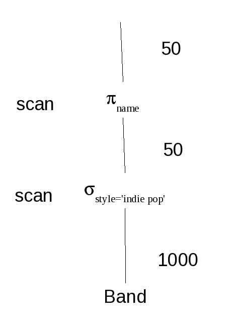
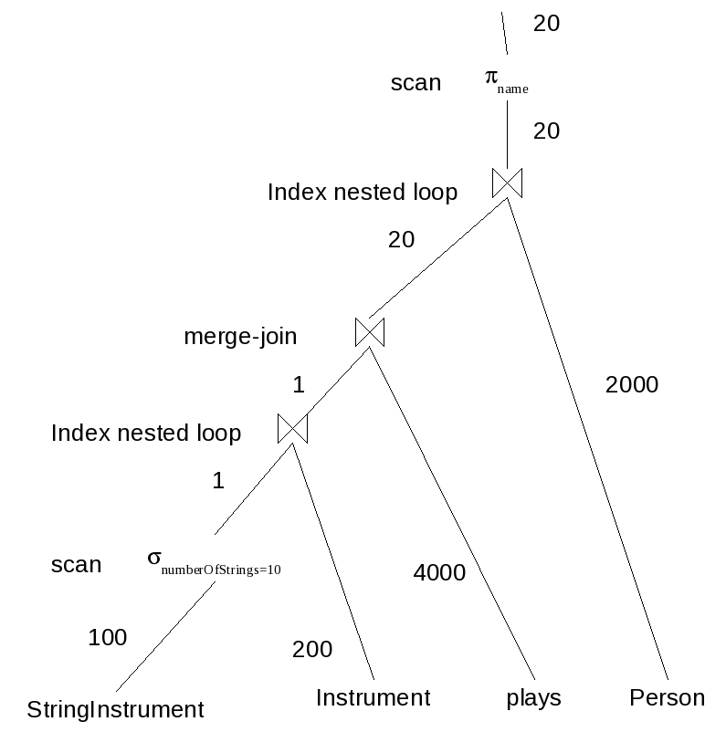
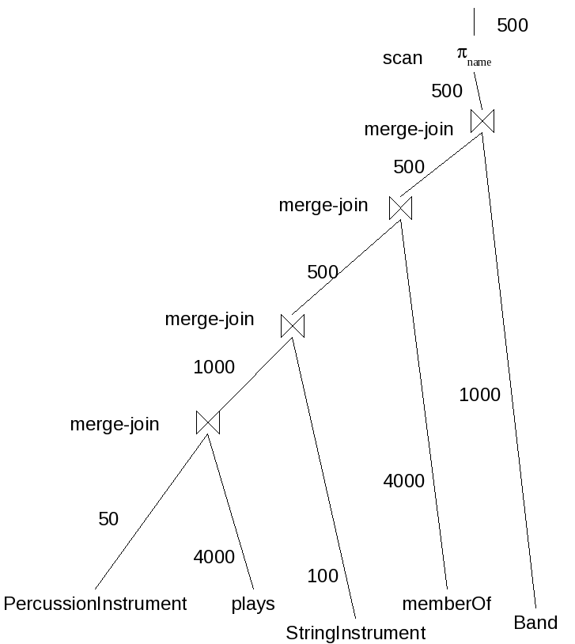

This is a solution to a sample exercise.
Show the optimized query evaluation plans for the following schema and queries:
create table Person(
id int primary key, -- [hash index of size 2000]
dob date not null,
name varchar(255) not null -- [tree index of size 1000]
);
create table Band(
id int primary key, -- [hash index of size 1000]
name varchar(255), -- [1000 values]
style varchar(255) -- [20 values]
);
create table Instrument(
id int primary key, -- [hash index of size 200]
name varchar(255) not null,
musicalKey varchar(255)
);
create table plays(
person int references Person(id)
on update cascade on delete cascade,
instrument int references Instrument(id)
on update cascade on delete cascade,
primary key(person, instrument) -- [tree index of size 4000]
);
create table memberOf(
person int references Person(id)
on update cascade on delete cascade,
band int references Band(id)
on update cascade on delete cascade,
primary key(person, band) -- [tree index of size 4000]
);
create table StringInstrument(
id int primary key references Instrument(id) -- [hash index of size 100]
on update cascade on delete cascade,
numberOfStrings int not null -- [range: 1 to 300]
);
create table BrassInstrument(
id int primary key references Instrument(id) -- [hash index of size 50]
on update cascade on delete cascade,
numberOfValves int not null
);
create table PercussionInstrument(
id int primary key references Instrument(id) -- [hash index of size 50]
on update cascade on delete cascade
);
select b.name from Band b where b.style = 'indie pop'
There is no index on the style column, so one must scan the table. There are 20 styles so we expect to have 50 bands. The projection can only be a scan.

select m.id, m.name from Person m, plays p, Instrument i, StringInstrument si where p.person = m.id and p.instrument = i.id and i.id = si.id and si.numberOfStrings = 10
The range of values for numberOfStrings is 300 but there are only 100 string instruments, so we expect to have fewer than 1 such string instrument on average. There is no index on the numberOfStrings, so a scan must be used. None of the other relations are this small since there are no selections on them, so we should start with StringInstrument. The join with Instrument can use the index on the primary key of Instrument, so one can use an index nested loop. Because we expect the join to be highly selective, we use the index rather than a merge-join. The join with plays must be performed next, and we cannot use its primary key index, so a merge-join must be performed. There are 4000 plays records and 200 instruments, so we expect to have 20 plays records per instrument. The final join can use the primary key of the Person table, and the join is highly selective, so we use an index nested loop. The projection must use a scan.

select b.name from Band b, plays p, StringInstrument si, PercussionInstrument pi, memberOf m where b.id = m.band and p.person = m.person and p.instrument = si.id and p.instrument = pi.id
There are no selections on the tables, so we start with the smallest table which is PercussionInstrument. This must be joined with plays. Note that we cannot join with the StringInstrument table because there is no join constraint linking them in the query. As in the previous problem, there are 20 plays records per instrument, so there join will produce 1000 records. This can now be joined with the StringInstrument table. There are 200 instruments, 100 of which are string instruments and 50 of which are percussion instruments, or 50% and 25%, respectively. So we expect that 12.5% of all instruments will be both string and percussion, or 25 instruments. These 25 instruments will match with 20*25 or 500 plays records. One could use the index for this join, but it is much too unselective, so a merge-join is better. One must next join with memberOf. There are 4000 memberOf records and 2000 Person records, so we expect that each person is a member of 2 bands on average. So the join will produce 1000 records on average. The join is unselective, so a merge-join is used even though the index could be used in this case. Finally, we join with Band. The primary key index is available, but the join is too unselective, so a merge join is used once more. The projection must use a scan.

© 2011 Ken Baclawski. All rights reserved. Redistribution and use in source and binary forms, with or without modification, are permitted provided that redistributions and uses retain this copyright notice.